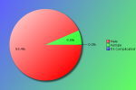

YAPC::Europe 2013 - Survey Results
The following survey results are a simple presentation of the raw data.
No attempt has been made to analyse the data and compare with previous
years. See forthcoming PDFs for more in depth analysis.
Click on pie charts to view larger image version.
Demographics
These questions will help us understand who our attendees are.
Attendees:
| Count | Description |
|---|
| 122 | Responded |
| 211 | No Response |
| 333 | Total |
| 36 | Response Percentage |
Age Band:
| Count | Description |
|---|
| 1 | under 20 |
| 37 | 20 - 29 |
| 55 | 30 - 39 |
| 22 | 40 - 49 |
| 7 | 50 - 59 |
| 0 | 60 and over |
Gender:
Although this question is optional, with your help we would like to monitor changes in attendance over time.

| Count | Description |
|---|
| 114 | Male |
| 8 | Female |
| 0 | It's Complicated |
Job Type:

| Count | Description |
|---|
| 6 | CEO/Company Director/Senior Manager |
| 0 | Non-Technical Manager |
| 19 | Technical Manager |
| 6 | Technical Architect/Analyst |
| 71 | Developer |
| 9 | Engineer |
| 3 | SysAdmin |
| 3 | Student |
| 0 | Lecturer/Teacher/Trainer |
| 0 | Human Resources |
| 1 | Researcher |
| 0 | Unemployed |
| 4 | Other |
If your position covers many roles, please base this on your most senior responsibility. Also base this on the role you perform, rather than your job title. For example, a 'QA Developer' would be a 'Developer' role, and 'Information Manager' would a Manager role (Technical or Non-Technical depending upon your responsibilites)
If 'Other' please enter your professional job role or title:
- Consultant
- DBA
- Solo founder
- Test engineer
Industry:
| Count | Description |
|---|
| 2 | Automotive |
| 2 | Education |
| 2 | Engineering |
| 7 | Finance |
| 0 | Government |
| 36 | IT Services |
| 45 | Internet/Web |
| 0 | Legal |
| 1 | Logistics |
| 2 | Media/Entertainment |
| 1 | Medical/Healthcare |
| 1 | Property |
| 3 | Research |
| 3 | Retail |
| 9 | Telecommunications |
| 2 | Travel |
| 0 | Unemployed |
| 6 | Other |
If you or your company undertake work within mulitple industry sectors, please select the primary one you are currently working within.
If 'Other' please enter your industry sector:
- Energy development
- Localization
- Mobile Advertising
- Science
- Several, 'cause contractor/freelancer
Region:

| Count | Description |
|---|
| 19 | Ukraine |
| 14 | UK / Ireland |
| 45 | Western Europa |
| 28 | Eastern Europa |
| 4 | Southern Europa |
| 10 | United States / Canada |
| 1 | Asia / Australaisa |
| 1 | South America |
| 0 | Africa |
Please note this is the region you were a resident in, prior to attending the conference.
The Perl Community, YAPCs & Workshops
These questions are designed to help us understand our attendees level of involvement in the Perl community.
How do you rate your Perl knowledge?
| Count | Description |
|---|
| 10 | Beginner |
| 48 | Intermediate |
| 63 | Advanced |
How long have you been programming in Perl?
| Count | Description |
|---|
| 7 | less than a year |
| 7 | 1-2 years |
| 23 | 3-5 years |
| 29 | 5-10 years |
| 56 | more than 10 years |
How many previous YAPCs have you attended?
| Count | Description |
|---|
| 44 | This was my first YAPC |
| Attended YAPCs | 1 | 2 | 3 | 4 | 5 | 6 | 7 | 8 | 9 | 10 | 11 | 12 | 13 | 14 | 15 | total |
|---|
| YAPC::Europe | 15 | 14 | 5 | 7 | 4 | 2 | 4 | 4 | 1 | 1 | - | 4 | 4 | - | - | 297 |
| YAPC::NA | 4 | 4 | 1 | - | 1 | - | 1 | - | - | - | - | - | 1 | - | 1 | 55 |
| YAPC::Russia | 7 | 7 | 4 | 1 | 1 | - | - | - | - | - | - | - | - | - | - | 42 |
| YAPC::SA / YAPC::Brazil | 1 | - | - | - | 1 | - | - | - | - | - | - | - | - | - | - | 6 |
How many Perl Workshops have you attended?
| Count | Description |
|---|
| 50 | Never attended one |
| Attended Workshops | 1 | 2 | 3 | 4 | 5 | 6 | 7 | 8 | 9 | 10 | 11 | 12 | total |
|---|
| Austrian Perl Workshop | - | 3 | - | - | 1 | 1 | - | - | - | - | - | - | 17 |
| Belgian Perl Workshop | 2 | 1 | - | 1 | - | - | - | - | - | - | - | - | 8 |
| French Perl Workshop | 3 | 2 | - | - | - | - | - | - | - | 1 | - | - | 17 |
| German Perl Workshop | 7 | 1 | - | - | 2 | - | - | - | 2 | - | 1 | 1 | 60 |
| Italian Perl Workshop | - | 2 | - | - | - | 1 | - | - | - | - | - | - | 10 |
| London Perl Workshop | 12 | 6 | 3 | 1 | - | - | - | 1 | 1 | - | - | - | 54 |
| Netherlands Perl Workshop | 3 | - | 1 | - | 1 | - | - | - | - | 3 | - | - | 41 |
| Nordic Perl Workshop | 4 | 3 | - | 1 | - | 1 | 1 | - | 1 | - | - | - | 36 |
| Ukrainian Perl Workshop | 4 | 2 | 1 | - | - | - | - | - | - | - | - | - | 11 |
| any American Perl Workshops | 3 | 2 | - | - | - | - | - | 1 | - | - | - | - | 15 |
| any Russian Perl Workshops | 4 | 2 | - | - | 1 | - | - | - | - | - | - | - | 13 |
| Other Perl Workshops | 6 | 1 | 1 | 1 | - | - | - | - | - | - | - | - | 15 |
Do you plan to attend a future YAPC/Workshop?
| Count | Description |
|---|
| 98 | Yes |
| 19 | Maybe |
| 5 | Don't Know |
| 0 | No |
If no, could you tell us why?
Particularly if this is your first YAPC, we would like to understand why you would not be able or interested in attending another event like it.
- I'd love to come to more Perl conferences and workshops -- I'm just not sure how feasible it will be with children.
- It depends upon the talks, if they are interesting
- Perl community is extremely hermetic, and it is very difficult to get into it. For me it is no longer fun to attend conferences/workshops only to see the presentations. I would like to contribute something, too. But with a community so closed like this, I am becoming more and more skeptical about its glorious future.
Are you a member of a local Perl Mongers user group?
| Count | Description |
|---|
| 73 | Yes |
| 49 | No |
If not, do you plan to find one or start one?
| Count | Description |
|---|
| 14 | Yes |
| 19 | Maybe |
| 9 | Don't Know |
| 14 | No |
What other areas of the Perl Community do you contribute to?
| Count | Description |
|---|
| 59 | I'm a CPAN Author |
| 15 | I'm a CPAN Tester |
| 19 | I'm a Perl event organiser (e.g. YAPC, Perl Workshop, QA Hackathon, local technical meetings, etc.) |
| 9 | I'm a board or committee member of a recognised Perl body (e.g. TPF, EPO, YEF, JPF, etc.) |
| 17 | I'm a Perl project developer (e.g. Rakudo, Catalyst, Dancer, Padre, etc.) |
| 26 | I have a technical blog (e.g. on blogs.perl.org or a personal blog) |
| 30 | I use or contribute to PerlMonks or other Perl forums |
| 44 | I use IRC (e.g. #perl, #yapc, #london.pm, etc.) |
| 22 | I contribute to Perl mailing lists (e.g. P5P, Perl QA, etc) |
| 7 | other ... |
If 'Other' please enter your area of contribution
- I am a perl5 core developer/comitter
- I frequently speak at London Perl Mongers technical meetings
- I have a website about Perl
- I wear T-shirt "use perl or die"
- i write perl articles
- I'm a core committer (but you knew that already because you can deduce who I am from the conference figures)
- I'm a Perl 6 module author
YAPC::Europe 2013
Regarding YAPC::Europe 2013 in Kiev specifically, please answer the following as best you can.
When did you decide to come to this conference?
| Count | Description |
|---|
| 48 | I'm now a regular YAPC::Europe attendee |
| 10 | After YAPC::Europe 2013 in Frankfurt am Main |
| 8 | After reading a YAPC::Europe blog post |
| 12 | I was nominated to attend by manager/colleague |
| 18 | I was recommended to attend by friend/colleague |
| 1 | After reading the Perl Weekly |
| 4 | After seeing a link or advert on a Perl specific website |
| 3 | After seeing a link or advert on a non-Perl website |
| 4 | After seeing a link on Twitter, Facebook or other social media website. |
| 3 | After reading an email sent to a mailing list I was in |
| 0 | After seeing other promotions online/in the press |
| 9 | other ... |
If 'Other', what else helped you decide?
- "I'm now" doesn't quite fit as I've been to all of them
- After reading "Pragmatic Perl" (russian e-zine)
- After reading PerlMonks mail
- because its in Ukraine
- http://pragmaticperl.com/
- I always attend
- it was in Kiev Ukraine
- when talk was accepted
Were you a speaker?
| Count | Description |
|---|
| 73 | No |
| 18 | No, but I have spoken before at similar conferences |
| 29 | Yes, and I have spoken before at similar conferences |
| 2 | Yes, and it was my first time as a speaker |
Note that "similar conferences" includes other YAPCs, as well as Linux, Open Source or large technical events such as workshops.
If you were a speaker, would you have been able to attend if you hadn't been speaking?
| Count | Description |
|---|
| 37 | Yes |
| 7 | No |
If you weren't a speaker, would you consider speaking at a future conference?
| Count | Description |
|---|
| 44 | Yes |
| 10 | No |
| 38 | Ask me later |
Were there any speakers not present, who you would like to have seen at the conference?
| Count | Description |
|---|
| 48 | Yes |
| 56 | No |
If 'Yes', which speakers?
| Count | Description |
|---|
| 21 | Damian Conway |
| 11 | brian d foy |
| 8 | Tatsuhiko Miyagawa |
| 6 | Mark-Jason Dominus |
| 5 | Tim Bunce, Léon Brocard & Paul Fenwick |
| 4 | Gabor Szabo |
| 3 | Ricardo Signes, Leo Lapworth & Randal Schwartz |
| 2 | Patrick Michaud, Anatoly Sharifulin, chromatic, Audrey Tang, Allison Randal, Sebastian Riedel, Karen Pauley & Mark Keating |
| 1 | Yuval Kogman, barbie, Alberto Simões (ambs), Chris Williams (BinGOs), Florian Ragwitz (rafl), Yves Orton, Paul Johnson, Clinton Gormley, Philippe Bruhat (BooK), Jesse Vincent, Steffen Mueller, Abigail, Dave Rolsky, Wendy van Dijk, Larry Wall & Liz Mattijsen |
Additional comments:
- Damian Conway, of course. Mark-Jason Dominus and Paul Fenwick are also interesting speakers.
- One more keynote speaker in addition to Larry would have been expected. Also would be nice to see Miyagawa at YAPC:EU since he's very productive and behind many modules I depend on.
- Yes, Tim Bunce, but not for giving a public talk, but for having a small-group developer conversation about DBI related projects
What kinds of talks would you prefer at future conferences?
| Count | Description |
|---|
| 3 | More beginner level talks |
| 19 | More intermediate level talks |
| 36 | More advanced level talks |
| 56 | It's about right |
| 7 | No preference |
Are there any topics you would specifically like to see featured?
- "How wifi works and why it's so hard to get it right". Yes, I know, it's not Perl-related. But it's so much yapc-related...
- A solid beginner track.
- AnyEvent, human communications
- Beginner and then intermediate talks about Perl internals, for people that might want to understand and hack on the Perl interpreter in the future.
- Big Data and Perl, Security, Business (DevOp, Perl in Business and related tools)
- Big Data, more about other technologies who interface with Perl (Postgres for example, ElasticSearch/Sphinx/SOLR, servers, templates...), and Evil Tricks are always fun. There is often a web focus at YAPC and less analytics/bio/research.
- GUI
- moar perl6 talks! :)
- Modern Perl Technics
- Mojolicious
- More live demos. In few cases lack of Internet Connections prevented it to present.
- More Perl6, MoarVM, Perl5 compiler enhancements (read: rurban talks)
- More practical day-to-day work-related tips, less research and future projects.
- more presentations of Perl products/applications
- more tracks, not just 3
- More uses cases.
- New modules and projects.
How people are approaching package/project management (eg. carton vs wigwam vs puppet vs chef vs whatever.)
Community++
- NoSQL databases and usage, ZMQ (the talk at Yapc just reminded me why I now use SALT/Python, puppet etc).
- Object Orientation
Best Practices
Design Patterns
- P5P -- an update on what's happening there, the current state of development, and so on
- Perl & networking
Perl & multiprocessing/multithreading computing
Effective work with legacy Perl code
- Perl and SOA, refactoring large legacy code bases
- Perl course for beginners
- Perl guts
- Remote debug with perl
Using SOAP
Memory management in v5 vs v6
- RPM, distribution, deployment, using fresh versions of perl on CentOS, Parallel processes, daemons, IPC, highload, PSGI
- talks about good software design
- testing, xs
- The Perl5 development management process.
- Web Development
Web Frameworks
Testing
- Web Development
How do you rate the conference?
How would you rate your overall satisfaction of the following areas of the conference?
| Choices | 1 | 2 | 3 | 4 | 5 |
|---|
| Newsletters/Updates | 58 | 47 | 3 | 3 | - |
|---|
| Website | 47 | 60 | 9 | 1 | - |
|---|
| Registration process | 71 | 38 | 6 | 1 | - |
|---|
| Directions/Maps | 61 | 43 | 6 | 1 | - |
|---|
| Content of the talks | 32 | 67 | 13 | 2 | - |
|---|
| Schedule efficiency | 60 | 49 | 4 | 2 | - |
|---|
| BOFs | 14 | 24 | 7 | 4 | - |
|---|
| Social events | 72 | 36 | 3 | 1 | - |
|---|
| Parking | 8 | 2 | 2 | - | - |
|---|
| Facilities | 40 | 60 | 8 | 1 | - |
|---|
| Food service | 46 | 53 | 14 | 4 | - |
|---|
| Accommodation | 42 | 41 | 7 | 2 | - |
|---|
| Staff | 77 | 36 | 2 | 1 | - |
|---|
| Overall experience | 71 | 42 | 2 | - | - |
|---|
| Value for price | 83 | 27 | 2 | - | - |
|---|
Key:
1 = Very Satisfied
2 = Somewhat satisfied
3 = Somewhat un-satisfied
4 = Very un-satisfied
5 = N/A
Conference Attendance
In order to help future organisers gauge an appropriate conference fee, how much would you (or your company) have paid for a conference ticket? Feel free to provide an answer for all rates, where corporate rate would be paid for by your company (including a Master Class place), standard rate would be the regular price paid by attendees in paid employment, and lastly the concession rate for anyone who holds proof that they are in fulltime education or are unemployed.
Corporate Rate:
| Count | Fee |
|---|
| 7 | € 100 |
| 1 | € 1000 |
| 1 | € 110 |
| 6 | € 150 |
| 1 | € 150-200 |
| 1 | € 160 |
| 3 | € 200 |
| 5 | € 250 |
| 4 | € 300 |
| 1 | € 350 |
| 7 | € 400 |
| 8 | € 500 |
| 1 | € 600 |
| 1 | € 80 |
Standard Rate:
| Count | Fee |
|---|
| 25 | € 100 |
| 1 | € 100-150 |
| 3 | € 110 |
| 3 | € 120 |
| 1 | € 125 |
| 5 | € 150 |
| 1 | € 20 |
| 5 | € 200 |
| 2 | € 40 |
| 3 | € 50 |
| 1 | € 60 |
| 3 | € 70 |
| 1 | € 75 |
| 1 | € 80 |
| 1 | € 90 |
Concession Rate:
| Count | Fee |
|---|
| 1 | € 10 |
| 1 | € 100 |
| 7 | € 20 |
| 2 | € 25 |
| 4 | € 30 |
| 1 | € 35 |
| 3 | € 40 |
| 1 | € 42 |
| 12 | € 50 |
| 1 | € 60 |
| 1 | € 70 |
| 1 | € 75 |
| 2 | € 80 |
| 2 | € 90 |
Would you pay more for a YAPC if we could exclude sponsorship advertising?
| Count | Description |
|---|
| 11 | Yes |
| 76 | No |
If so, how much?
| Count | Fee |
|---|
| 1 | € 1000 |
| 3 | € 150 |
| 1 | € 200 |
| 2 | € 25 |
| 1 | € 300 |
| 1 | € 90 |
How did you pay for the conference fee?
| Count | Description |
|---|
| 20 | N/A - I was a speaker |
| 1 | N/A - I was a sponsor |
| 47 | My company paid |
| 43 | I paid out of my own pocket |
| 0 | I wasn't able to attend |
If your employer didn't send you, did they give you time off to attend?
| Count | Description |
|---|
| 45 | Yes |
| 14 | No |
Does distance prevent you from being able to attend some YAPCs?
| Count | Description |
|---|
| 48 | Yes |
| 54 | No |


{kind=link}
{kind=link}
{kind=link}
{kind=link}